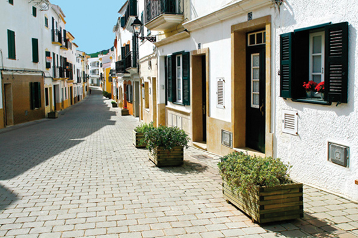

Ferreries, im wesentlichen eine Stadt
 Es gibt Orte die etwas besonderes haben, aber man weiss nicht genau warum?. Strassen in den man sich beim schlendern verlieren könnte, aber man weiss nicht genau wieso? Es hat eine besondere Stimmung, aber man kennt nicht den genauen Grund. Das beschreibt genau Ferreries. Diese im Zentrum der Insel gelegene Stadt zählt knapp 4.500 Einwohner und wird ihren Gästen als weisser Teppich mit roten Akzenten angeboten. Gekrönt wird der Ort vom erhabenen Kirchturm der San Bartomeu Kirche, die auch der Urspung zur Gründung des Dorfes war. Die Kirche liegt direkt in der Mitte der Altstadt. Eine sehr hübsche Gegend, aber ohne viel Tamtam. Die alten Gassen im Viertel sind sehr harmonisch angelegt und laden zum begehen ein. Dort befindet sich auch das Rathaus und verschiedene Brunnen, die einst die Bewohner mit Frischwasser versorgten. Der alte Fischmarkt und die traditionelle Bauweise können Sie dort auch finden. An diesem Ort atmet man Ruhe und Stille, als wenn es der Stress es nie geschafft hätte in die weissgefärbte Stadt einzudringen. Im Sommer ist es immer noch Brauch in Ferreries, die menorquinischen Stühle auf dem Gehsteig zu platzieren und dort bis spät in den Abend hinein zu plauschen. Das heisst hier ”seure a la fresca” und bedeutet “an die frische Luft setzten”. Das macht die Menschen aus, sie sind autentisch und grosszügig. Ferreries hat sich seinen traditionellen Charme bewahrt, auch wenn jetzt modernere Zeiten herrschen.
Es gibt Orte die etwas besonderes haben, aber man weiss nicht genau warum?. Strassen in den man sich beim schlendern verlieren könnte, aber man weiss nicht genau wieso? Es hat eine besondere Stimmung, aber man kennt nicht den genauen Grund. Das beschreibt genau Ferreries. Diese im Zentrum der Insel gelegene Stadt zählt knapp 4.500 Einwohner und wird ihren Gästen als weisser Teppich mit roten Akzenten angeboten. Gekrönt wird der Ort vom erhabenen Kirchturm der San Bartomeu Kirche, die auch der Urspung zur Gründung des Dorfes war. Die Kirche liegt direkt in der Mitte der Altstadt. Eine sehr hübsche Gegend, aber ohne viel Tamtam. Die alten Gassen im Viertel sind sehr harmonisch angelegt und laden zum begehen ein. Dort befindet sich auch das Rathaus und verschiedene Brunnen, die einst die Bewohner mit Frischwasser versorgten. Der alte Fischmarkt und die traditionelle Bauweise können Sie dort auch finden. An diesem Ort atmet man Ruhe und Stille, als wenn es der Stress es nie geschafft hätte in die weissgefärbte Stadt einzudringen. Im Sommer ist es immer noch Brauch in Ferreries, die menorquinischen Stühle auf dem Gehsteig zu platzieren und dort bis spät in den Abend hinein zu plauschen. Das heisst hier ”seure a la fresca” und bedeutet “an die frische Luft setzten”. Das macht die Menschen aus, sie sind autentisch und grosszügig. Ferreries hat sich seinen traditionellen Charme bewahrt, auch wenn jetzt modernere Zeiten herrschen.
Die Stadt hatte war schon immer Land der Unternehmer. Die “ferreriencs” haben schon immer einen Weg zum Erfolg gefunden. So ist es nicht überraschend, das in dieser kleinen Stadt die weltweit bekannten Schuhe hergestellt werden, die auch schon auf den grossen Laufstegen dieser Welt von den grössten Models getragen wurden. Auch werden in Ferreries die authentischen Avarques hergestellt, traditionell bis innovative Modell können dort direkt ab Fabrik erworben werden. Zusätzlich ist die Stadt noch für ihre Möbelindustrie, die Schmuckfertigung und der Herstellung von Käseprodukten bekannt. Falls Sie in Ferrerias einen Stop einlegen, dann probieren Sie das Brot dort. Die Bäcker der Stadt haben eine besondere Fertigkeit um den Ofenprodukten einen besondern Geschmack zu verleihen. Samstags morgens gibt es in Ferrerias einen Biobauermarkt an dem die Bauern ihre frischen Waren verkaufen, schlendern Sie durch die Gerüche der Früchte von Menorcas Erde. Das ist Natur pur.
Ferrerias wurde im späten dreizehnten Jahrhundert geboren, und so seltsam es auch klingen mag, es ist die höchstgelegenste Stadt von Menorca. Sie befindet sich auf 141 Meter über dem Meeresspiegel und ist von zwei weiteren Erhöhungen umgeben, eine davon ist S`Enclusa, worauf sich eine ehemalige amerikanische Militärbasis befindet und Santa Agueda. Auf der Anhöhe von Santa Agueda befinden sich auch heute noch Überreste der maurischen Burg Sent Agayz, Sie können den Berg entlang einer teilweise noch gut erhaltenen Römerstrasse erklimmen und von dort oben die spezielle Persönlichkeit dieses Aussichtspunktes geniessen. Versetzten Sie sich zurrück in die menorquinische Vergangenheit. Der letzte Zufluchtsort der Araber auf der Insel, zu dem es unendlich viele Legenden zu erzählen gibt, unter anderem die des “goldenen Kalbes”. Der Aufstieg von ca. 45 Minuten zu Fuss lohnt sich auf jeden Fall und den wundervollen Ausblick, vom zweithöchsten Berg Menorcas, sollten Sie sich nicht entgehen lassen. Um Ferreries herum können sie verschiede Landschaften bewundern, es kommt drauf an ob Sie sich für den Norden oder den Süden entscheiden. Im Norden herrscht die wilde vom Tramontanawind gezeichtete Natur. Felsbuchten, sowie Ets Alocs mit kristallklarem Wasser, für Naturstrandliebhaber. Für diesen Weg sollten Sie alllerdings etwas Zeit einplanen und das auf dem Weg liegende Naturkundemuseum besuchen. Es liegt direkt auf dem Gelände von Binissuès. Sie werden sehr überrascht sein.
Falls Sie den Süden wählen werden Sie gleich drei Mal belohnt. Ein Stop ist der Strand von Cala Galdana, mit seiner ausserordentlichen Lage ist die Bucht perfekt für den Familientourismus. In der mit Felsen geschmückten Bucht laden die am Bach entlang vielfältigen Geschäfte zum shoppen ein. Die zweite Möglichkeit ist Cala Mitjana, dort finden Sie einen der unzähligen Naturstrände der mit seinem weissen Sand und dem türkisfarbenem Wasser zum wahren Genuss wird. Lassen sich von der Meeresbrise und der Sonne die Haut streicheln, einfach nur die Seele baumeln lassen. Ein kleines Stück zu Fuss können Sie von dort aus auch die malerische Bucht Cala Mitjaneta erkunden, die Bucht die auf den meisten Postkarten zu finden ist. Das hat schon seinen Grund. Der dritte Tipp ist die tiefste Schucht von Menorca, Algendar. Sie endet direkt in der Bucht von Cala Galdana und ist bekannt für ihre vielen Legenden und Mythen. Erfragen Sie sie auf einem Spaziergang durch die unberührte Natur. Seien Sie umsichtig in dieser privilegierten Umgebung, es gibt viel zu schauen. Wenn Sie gerne länger Wandern möchten sollten Sie den Wanderweg Cami Reial nicht verpassen. Der Weg kreuzte vor Jahrhunderten die ganze Insel von Mahon nach Ciutadella, leider ist aber der grösste Teil dieses Weges heute nicht mehr nutzbar. Der Teil der Strecke von Ferreries nach Ciutadella ist aber, Dank der Ferreriencs, noch sehr gut begehbar. In der Tat ist dieser Weg eine sehr gute Wahl, die sie auch bequem von der anderen Seite in die Schlucht von Algendar führt. Nun zurrück zur Stadt. Wenn Sie nun alle alten Gassen durchstöbert haben, nehmen Sie sich doch noch etwas Zeit zum ausruhen auf einer der Bänke an der Plaza España. Es ist der Knotenpunkt der Stadt wo alle Märkte und Messen stattfinden und auch Treffpunkt der Familien mit ihren spielenden Kindern und den Strassencafe`s ist. Lehnen Sie sich einfach mal zurrück und geniessen Sie ohne Eile, nur Leben “alles wird gut”. Carpe diem.
 Ferreries feiert ein mal im Jahr ihren Schutzpatron, San Bartomeu, am 23, 24 und 25 August. An diesen Tagen stehen die Pferde im Mittelpunkt. Nach dem Ritual,auch in den anderen Gemeinden der Insel, findet der Jaleo”Pferdetanz”, am 23 nachmittags und am 24 morgens auf dem zentralen Platz statt. Der Höhepunkt der Aufführungen der Caixers(Reiter). Am 25 wird eine spassige Aufführung organisiert, wobei die Pferde durch Esel ersetzt werden, es ist immer sehr lustig, grad für die Familien. Wenn Sie über die Haupstrasse das Perfil von Ferreries sehen, mit den weissen Wänden und den roten Dächern, dann halten Sie einfach mal auf eine Stippvisite an. Wodurch der Name Ferreries enstand ist auch nach Jahrhunderten noch nicht ganz klar. Einige sagen es kommt von der “ferrers”(Schmiede), die damals ihre Gilde in dem Dorf hatte um die Pferde auf den langen Wegen neu zu beschlagen. Andere glauben es kommt von der Bruderschaft “Fraria”, weil das Dorf auf deren Land erbaut wurde. Wie auch immer, Ferrerias hat viel zu bieten. Eine Stadt die zu einem Spaziergang einläd, Strände die Sie bequem erreichen können, viele weisse Naturstrände, eine eindrucksvolle Steilküste und die tiefe Schlucht. Sie wissen immer noch nicht für was Sie sich entscheiden? Halten Sie enfach an in Ferreries.
Ferreries feiert ein mal im Jahr ihren Schutzpatron, San Bartomeu, am 23, 24 und 25 August. An diesen Tagen stehen die Pferde im Mittelpunkt. Nach dem Ritual,auch in den anderen Gemeinden der Insel, findet der Jaleo”Pferdetanz”, am 23 nachmittags und am 24 morgens auf dem zentralen Platz statt. Der Höhepunkt der Aufführungen der Caixers(Reiter). Am 25 wird eine spassige Aufführung organisiert, wobei die Pferde durch Esel ersetzt werden, es ist immer sehr lustig, grad für die Familien. Wenn Sie über die Haupstrasse das Perfil von Ferreries sehen, mit den weissen Wänden und den roten Dächern, dann halten Sie einfach mal auf eine Stippvisite an. Wodurch der Name Ferreries enstand ist auch nach Jahrhunderten noch nicht ganz klar. Einige sagen es kommt von der “ferrers”(Schmiede), die damals ihre Gilde in dem Dorf hatte um die Pferde auf den langen Wegen neu zu beschlagen. Andere glauben es kommt von der Bruderschaft “Fraria”, weil das Dorf auf deren Land erbaut wurde. Wie auch immer, Ferrerias hat viel zu bieten. Eine Stadt die zu einem Spaziergang einläd, Strände die Sie bequem erreichen können, viele weisse Naturstrände, eine eindrucksvolle Steilküste und die tiefe Schlucht. Sie wissen immer noch nicht für was Sie sich entscheiden? Halten Sie enfach an in Ferreries.